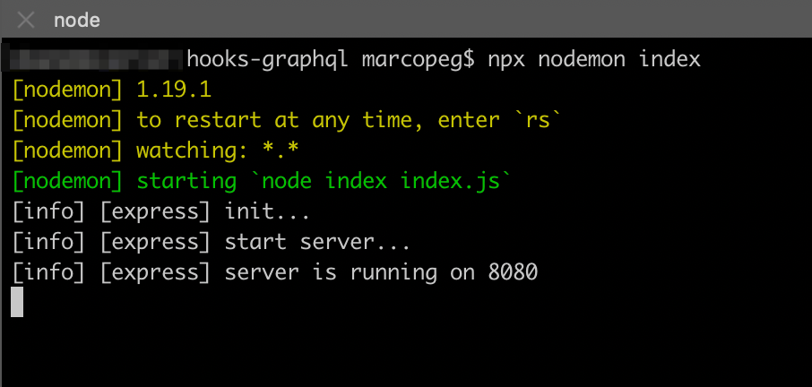
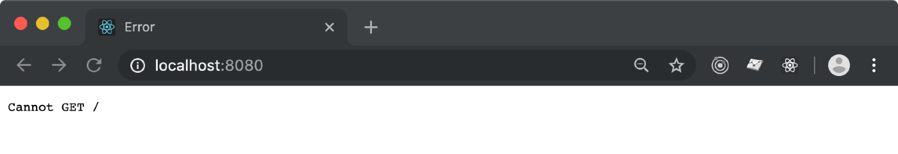
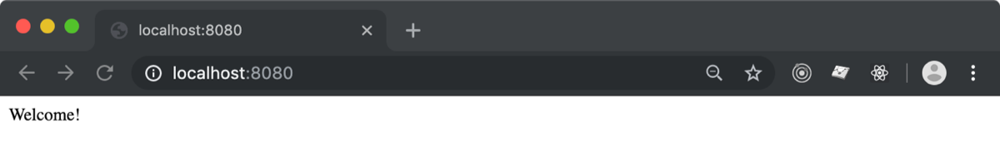
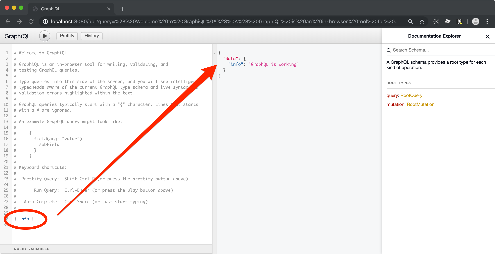
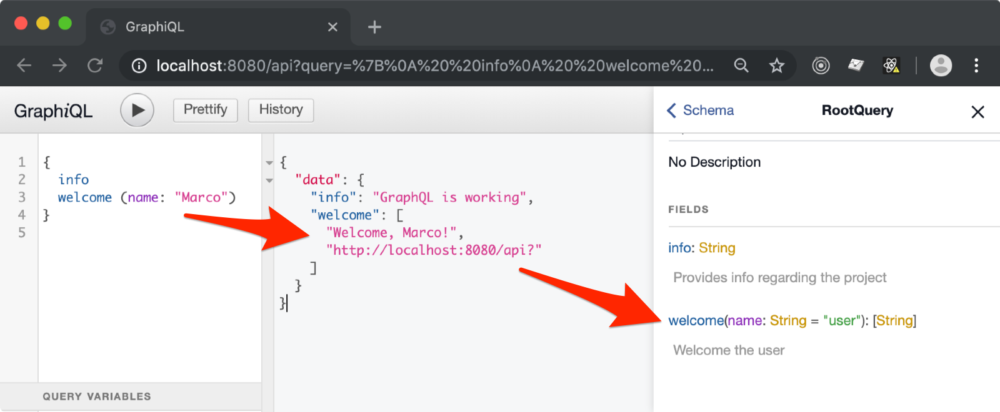

GraphQL made easy with Hooks
Facebook's crew didn't only came up with React and PropTypes... they also produced GraphQL!
GraphQL is to REST Api what PropTypes is to React Components' Props
This is the simplest explanation to GraphQL that I came up with.
You basically describe the arguments to a particular request, and you
describe the output data structure.
GraphQL provides 2 major benefits (plus many other):
- input / output schema validation
- fetch from multiple end points within a single request
Honestly, I hardly imagine working out an API without it. It's like the good ol' Json Schema but on steroid.
Enough with the intro, in this tutorial you learn how to setup a GraphQL API service in NodeJS, using ExpressJS an ForrestJS' Hooks.
If you just want to see this in action, download this tutorial codebase here,
then runyarn boot.
Step n.1 - Create a Hooks App
Initialize a new NodeJS project (yarn init) then install the hooks:
yarn add @forrestjs/hooks
Then copy this Hooks skeleton app into index.js:
const { runHookApp } = require('@forrestjs/hooks')
runHookApp([ /* features go here */ ])
At last you can run this app with npx:
NODE_ENV=development npx nodemon index.js
You might notice that... nothing happens!
That's right, this is just an empty Hooks based app.
NOTE: It is quite important to set NODE_ENV=development to have some cool stuff
available later in the tutorial. Stick with it for now.
Step n.2 - Add ExpressJS Service
Running an ExpressJS on ForrestJS is a really easy task.
If you want a better explanation of what we are about to do,
you may want to checkout the Hooks tutorial first.
First install the service package:
yarn add @forrestjs/service-express
Then modify index.js to register the new service:
runHookApp([
require('@forrestjs/service-express'),
])
Run the app again and we notice that some kind onf service is up and running on 8080:

But if you try to navigate to http://localhost:8080 you'll face bad luck:

That is because @forrestjs/service-express creates an ExpressJS app for you all right,
but it doesn't provide any route route to it.
2b - Add your first route
It is up to you to create a custom feature and implement some your business logic, here follows a super short tutorial how to create your first route.
First let's create a new NodeJS module where to place this piece of logic:
vi home.route.js
And paste this code into it:
const { EXPRESS_ROUTE } = require('@forrestjs/service-express')
const routeHome = ({ app }) =>
app.get('/', (_, res) => res.send('Welcome!'))
module.exports = [ EXPRESS_ROUTE, routeHome ]
Believe it or not, this is a perfectly functionable ForrestJS's feature!
The next step is just to register it into your Hooks App:
runHookApp([
require('@forrestjs/service-express'),
require('./home.route'),
])
Reload your http://localhost:8080 and the magic is just blowing out your mind!

Of course now you can add all the routes you may need, but let's stick to the plan and move into GraphQL service.
Step n.3 - Add GraphQL
I guess you got the drill by now... Let' first install the ForrestJS's package:
yarn add @forrestjs/service-express-graphql
Then register it into pur App:
...
runHookApp([
...
require('@forrestjs/service-express-graphql'),
])
This is still a very small codebase, but if you try to hit:
http://localhost:8080/api
Things start to look quite juicy now:

@forrestjs/service-express-graphq does a couple of things just out of the box:
- it mounts
express-graphqlon the/apiroute in your ExpressJS service - activates GraphiQL UI in develpment (that's why
NODE_ENV=development) - it provides an
infoquery and mutation (but you can override it of course)
As with everything in ForrestJS, most of the default behaviours are fully configurable via the App's configuration or Environment Variables.
Step n.4 - Add your own Queries and Mutations
There are plenty of GraphQL tutorials out there, so here we will focus in writing
a simple query that shows how to use the EXPRESS_GRAPHQL hook.
First create a new Hooks Feature where to implement the query, just because it is nice to keep an eye on the Single Responsibility Principle 😏
vi welcome.query.js
And paste this code in it:
const { EXPRESS_GRAPHQL } = require('@forrestjs/service-express-graphql')
const { GraphQLList, GraphQLString } = require('graphql')
const welcomeHandler = (_, args, { req }) => [
`Welcome, ${args.name}!`,
req.protocol + '://' + req.get('host') + req.originalUrl,
]
const welcomeQuery = ({ queries }) =>
queries.welcome = {
description: 'Welcome the user',
args: {
name: {
type: GraphQLString,
defaultValue: 'user',
},
},
type: new GraphQLList(GraphQLString),
resolve: welcomeHandler,
}
module.exports = [ EXPRESS_GRAPHQL, welcomeQuery ]
Now it's just a matter of registering the new feature in your app:
...
runHookApp([
...
require('./welcome.query'),
])
Reload your GraphiQL and enjoy your new welcome endpoint:

NOTE n.1: The service-express-graphql
decorates the query's context with the req and res objects from the
ExpressJS' middleware. This comes in handy if you plan to have some middlewars that
add informations into the request's context and you plan to access them at resolve time.
NOTE n.2: Most of the time I even split the query's definition from the query's
implementation (the resolve function) into two separated modules. I do that mostly
because of testability, but it time it turns our a very good practice.
Configuration - How to change the Endpoint name
Say you don't like /api as endpoint for your GraphQL... say you'd prefer /graphql.
Here is how you can hook into the App's boot process and provide custom configuration:
const { runHookApp } = require('@forrestjs/hooks')
const { registerAction, SETTINGS } = require('@forrestjs/hooks')
registerAction([SETTINGS, ({ settings }) => {
settings.express = {
graphql: {
mountPoint: '/graphql',
},
}
}])
runHookApp([
require('@forrestjs/service-express'),
require('./home.route'),
require('@forrestjs/service-express-graphql'),
require('./welcome.query'),
])
Download
If you experienced any trouble following the steps above, download this tutorial codebase here.
Challenge
You now have all the basics components to play around with your ExpressJS app and GraphQL.
Can you build a simple authentication system so that a mutation will give you access to some protected queries?